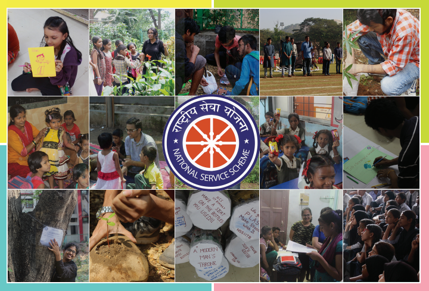
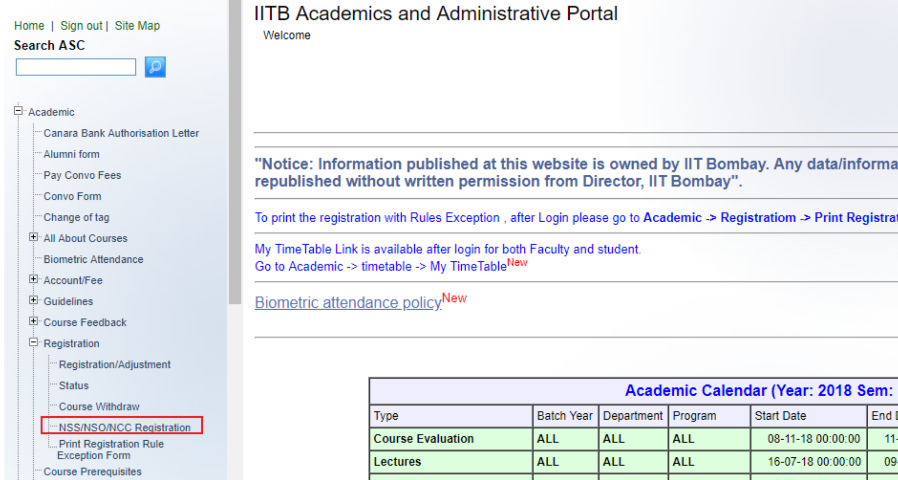

What is NOCS?
NOCS 01 and NOCS 02 are academic courses as a part of curriculum for first-year students as directed by the Ministry of Youth Affairs and Sports, Government of India, run respectively in the first (Autumn) and second (Spring) semester of every academic year. Every undergraduate student of IIT Bombay has to complete both of these courses. The academic curriculum prescribes it to be completed in first and second semester of first year.
NOCS 01 and 02 offer three choices to opt from, namely, National Service Scheme (NSS), National Sports Organisation (NSO) and National Cadet Corps (NCC). Students have to fill the preference form for the three options and are allotted the choices according to available positions for NSS, NSO and NCC.
What is NSS?
National Service Scheme, IIT Bombay, being the largest student volunteer body, is the most active and perseverent organization in the campus in the field of social/community service. We provide opportunities for students to contribute their bit in the welfare of the society. NSS has 4 departments spanning all avenues of community service right from educating the underprivileged to innovating solutions to social problems using technology. Here are all the departments introduced briefly -
Spreading happiness through community service has been one of the primary objectives of NSS. With innovative activities across the departments catering to all classes of the campus residents, we try to create small, happy and memorable moments in their lives. And working in NSS itself has been one of the prime sources of happiness for the people associated with us.
Have Any Questions in Mind..? Click Here!
The UG freshmen have to register online for NOCS Registrations. NOCS registration is available on the ASC portal login, Academic -> Registration -> NSS/NSO/NCC.
Registration window is open till 29th July. It is advised not to wait for the last moment to register as portal may crash at the last moment due to heavy load.
Very important note:
Suyash Bagad: +91 7507410474
Mainak Saha: +91 9769393564
Some Experiences of NSS Volunteers
Every volunteer contributes significantly in the execution of the widespread activities of NSS. Throughout this journey, there are several moments of joy for our volunteers which they relish for the rest of their lives. We have compiled some of them in the form of the memoirs. Do give a read!